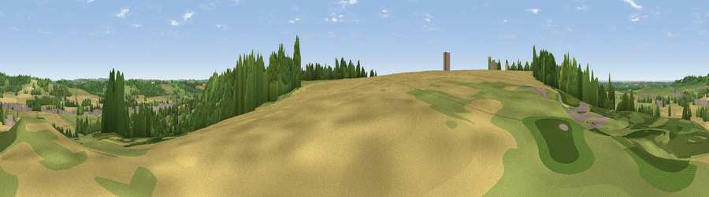

Viewpoint near Warmington
#35258 in England · top 76% of its area beats it · near WarmingtonThe view, rendered

A 360° render of this exact spot computed from the terrain model, tree cover and land cover — summer colours, afternoon light, calibrated against photographs of famous viewpoints. Real trees, hedges and buildings will differ in detail.
The panorama
Grey silhouette: terrain skyline in each direction (720 bearings, Earth curvature and refraction included). Dashed green: skyline with trees (+15 m) and buildings (+8 m) as obstacles. Blue strip: how far the ground is visible on each bearing.
Where the view opens
Wedge length = distance to the farthest visible ground on that bearing (vegetation-aware). Rings at 10, 25 and 50 km.
What fills the view
43% cropland · 38% grassland · 17% woodland · 2% built-up
Angular shares of the visible panorama (visual magnitude), not map area. Landscape diversity 0.49 (0–1 Shannon).
Key numbers
More beautiful places nearby
The staircase of upgrades: each row has a higher view potential than everything closer. Driving times are estimates from straight-line distance, calibrated against real road routing — check an actual route before setting out.
| Place | Direction | Drive | Score |
|---|---|---|---|
| Deddington Hill | ESE · 1 km | ~3 min | 38.5 |
| Viewpoint near Farnborough | NNE · 2 km | ~6 min | 56.1 |
| Viewpoint near Radway | WNW · 3 km | ~7 min | 71.7 |
| Viewpoint near Ilmington | WSW · 21 km | ~35 min | 72.6 |
| Viewpoint near Meon Vale | W · 23 km | ~38 min | 77.0 |
| Broadway Hill | WSW · 31 km | ~49 min | 77.7 |
| Viewpoint near Elmley Castle | W · 44 km | ~64 min | 80.5 |
| Bredon Hill | W · 45 km | ~66 min | 83.0 |
52.12589, -1.40654 · source: screening · position refined by local search. Computed location — check access rights before visiting.